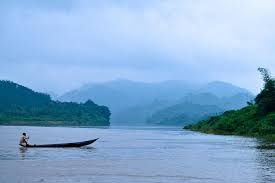

See More Photos

.jpg)
.jpg)
.jpg)
.jpg)
Bana Vihara, which can be reached, either via Rajbari Ghat, or via a bridge slightly further west, houses a large Buddhist monastery, constructed by Chakma Buddhist monks in 1972. You can wander the grounds, peek inside the temples (ask first) and see monks making wooden boats by the water’s edge on the eastern side of the island.
The most popular trip is Shuvalong Falls (90 minutes one way). This modest waterfall is little more than a trickle for most of the year, but the boat trip out to it is fabulous; first crossing the vast expanse of the main lake, then entering an area of islands covered with banana plants, and finally a dramatic pass through a steep-sided gorge.
This museum has well-thought-out displays on the Adivasis of the Hill Tracts, including costumes, bamboo flutes, coins, silver-and-ivory necklaces and animal traps. There is also a map showing where the different people of the region live. Look out for the Marma and Chakma ‘books’ carved onto palm leaves, which date from the 1860s.